Sách Global Success • Học từng Unit một: học từ vựng có hình + bấm 🔊 nghe đọc → xem sơ đồ ngữ pháp → lật flashcard → tự luyện tập → tập hỏi–đáp. Học hết 12 Unit mới xuống Phần Tổng kết ở cuối trang nhé!
💡 Nút 🔊 dùng giọng đọc có sẵn trong máy (điện thoại/máy tính) — không cần mạng vẫn đọc được từ tiếng Anh.
Unit 1–3 là phần ôn giữa kì 1, Unit 4–6 học tiếp sau giữa kì 1. Học kì 2 gồm Unit 7–9 (ôn giữa kì 2) và Unit 10–12 (sau giữa kì 2). Phân kỳ theo thứ tự sách giáo khoa. Mỗi thẻ từ đều có hình + phiên âm + câu ví dụ — bấm 🔊 và đọc to theo 3 lần là nhớ!
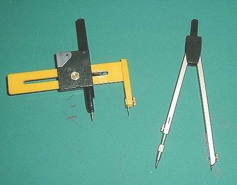
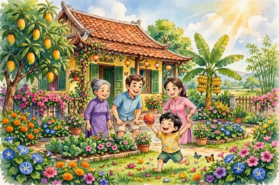
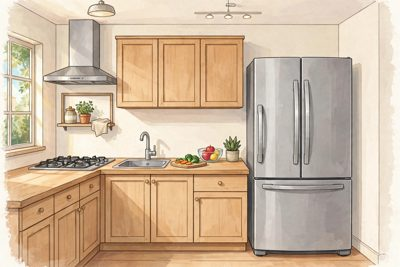
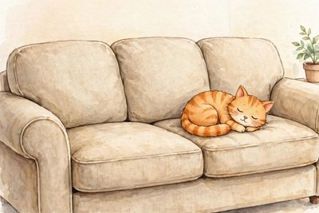
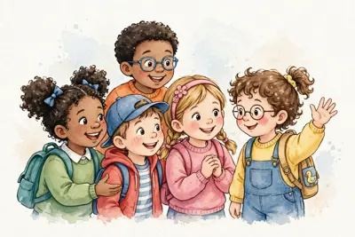
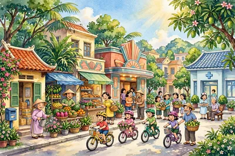
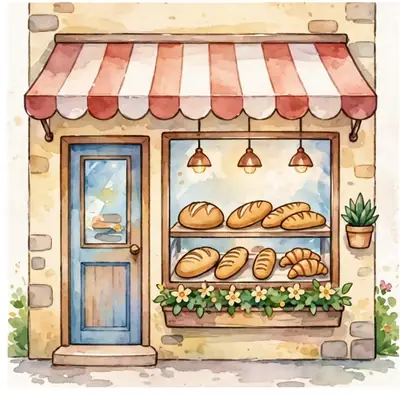
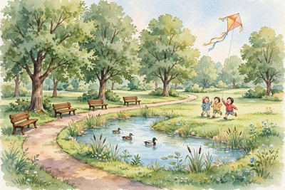
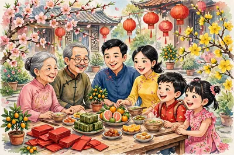
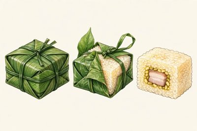
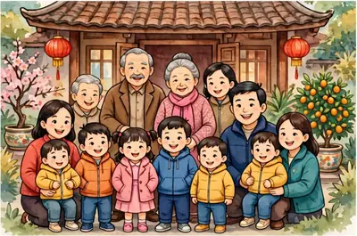
Ôn lại một lượt: toàn bộ flashcard từ vựng của Unit 1–Unit 6. Thẻ chưa thuộc được xếp lên trước; trạng thái đã thuộc nhớ chung với các bộ thẻ trong từng Unit.
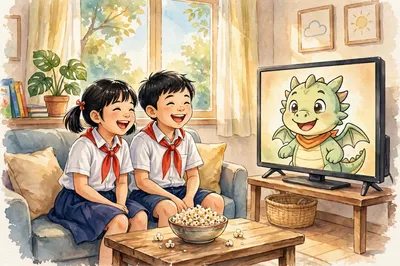
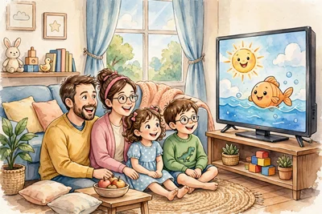
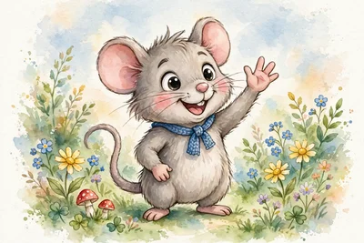
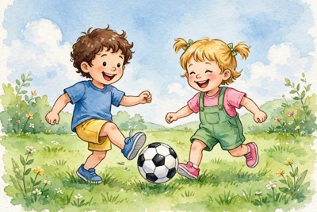
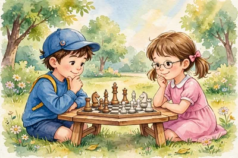
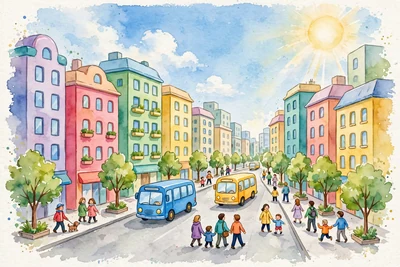
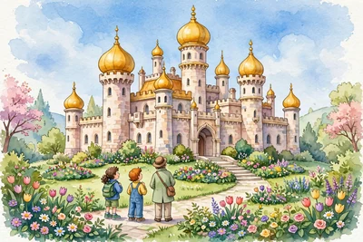
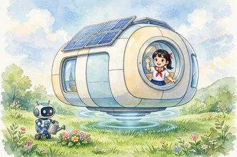
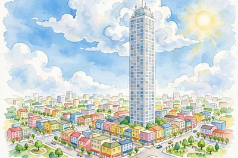
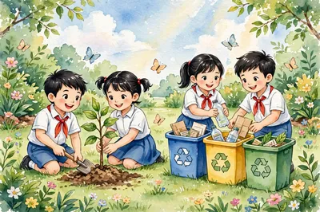
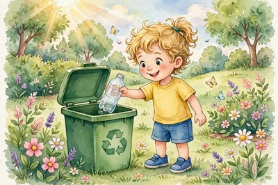
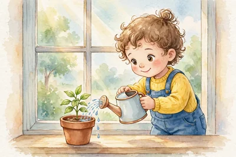
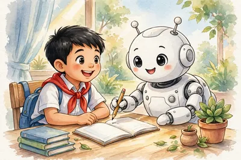
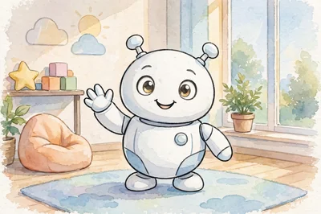
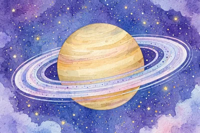
Ôn lại một lượt: toàn bộ flashcard từ vựng của Unit 7–Unit 12. Thẻ chưa thuộc được xếp lên trước; trạng thái đã thuộc nhớ chung với các bộ thẻ trong từng Unit.
Ôn lại một lượt: toàn bộ flashcard từ vựng của 12 Unit, bảng ngữ pháp cả năm học, và các chủ đề nói/viết em đã học.
Gộp tất cả thẻ từ của 12 Unit. Thẻ chưa thuộc được xếp lên trước; trạng thái đã thuộc nhớ chung với các bộ thẻ trong từng Unit. Bấm 🔊 trên thẻ để nghe đọc từ.
📌 Lưu ý: module này bám theo sách Tiếng Anh 6 Global Success. Nếu trường của em dùng bộ sách khác (ví dụ i-Learn Smart World), hãy báo lại để được chỉnh nội dung cho khớp nhé.